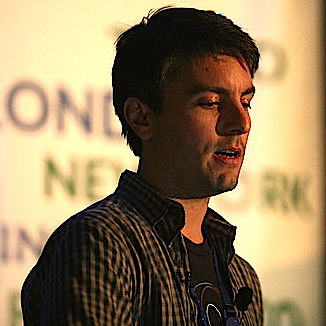

About
Container Days is an un-conference style gathering meant to discuss the revolution of Docker, CoreOS and other light weight virtualization technologies and their applications.
Patterned closely after CitCon and DevOps Days, Container Days provides a forum for all those interested in all the technical, process and production ramifications of adopting container style virtualization.
Be part of the buzz on Twitter: #cdatx
Registration is now open.
Location
It may seem crazy, but Hawaiian Falls water park is the ideal space for an unconference. A beautiful great room, solid internet access and break out rooms allow attendees to spread out and truly take advantage of the un-conference format.
It also doesn't hurt that Hawaiian Falls is providing a free water park admission this summer for each participant! Use some other conference's t-shirt to keep the sun off!
18500 N SH 130. Pflugerville, Texas
Speakers
DevOps Days Austin organizers Ernest Mueller and Boyd Hemphill will be hosting the event Friday and Saturday.
-

Friday, 6:30pm Welcome to Container Days
Boyd Hemphill @behemphi
In his capacity as Evangelist at StackEngine, Boyd dreamed of a DevOps Days style conference for the containerization revolution.
-

Friday, 6:45pm Opening Guest Speaker
Brian 'Redbeard' Harrington
Brian is a principal architect at CoreOS.
-

Friday, 7:45pm Opening Circle: Topics and Timeslots
Ernest Mueller @ernestmueller
-
Saturday, 9:15am Opening Circle Reprise
Ernest Mueller & Boyd Hemphill
-

Saturday, 9:30am Day Two Guest Speaker
Gabriel Monroy @gabrtv
Gabe is the creator of Deis and the CTO at OpDemand.
Open Spaces
OpenSpace is a small set of rules that allow groups of people to interact in a simple, productive, organized way to create valuable dialogs that address the participants' most important issues.
The Fundamental "Rules" of the sessions that happen during OpenSpace conferences are:
- Whoever shows up is the right group
- Whatever happens is the only thing that could have
- Whenever it starts is the right time
- When it's over, it's over.
To Lead an OpenSpace Talk:
- Come up with an interesting topic and title for your discussion. While many ideas will be spontaneous, we want to encourage people to come with some preparation and thoughts on hands on activities. AV will be provided in at least two of the spaces.
- Fill out a schedule Post-It for your topic.
- Place the topic on the schedule.
- If you see topics that have something in common, consider combining them into a single time slot.
- If a significant number of people want to attend your discussion and another discussion in the same time slot, try to trade into another time slot to ensure maximum dialog and participation.
To Attend an OpenSpace Talk
- Check the schedule and sign up for a talk or just drop in if you wish
- Use the 'Law of two feet.' If you feel that you are not contributing or benefiting from a presentation, please feel free to move on to something else.
- Allow the discussion convener to steer his or her topic. If you have an opposing opinion that needs a full time slot you should feel free to add your own OpenSpace slot to discuss the topic.
Schedule
Container Days Austin happens Friday night (March 27th) and all day Saturday (March 28th).
Friday night includes a great talk followed by hors-d'oeuvres and drinks while conducting the opening circle and session planning. The evening will close with a social hour.
If you would like to lead a session, please consider having something prepared to spark a discussion. This might be a short demo of a problem you are having implementing containers, or a demonstration of how you are aggregating logs, etc. We will have at least two spaces with AV for demos and other visual presentations.
Saturday opens with breakfast and a quick review of the un-conference rules. A great talk to start the day will set the tone for our morning sessions. Jack Hates Coffee will be serving your favorite latte on site for most of the day as well.
During lunch attendees can choose to play in the arcade or continue interesting conversations in the Lean Coffee style in the break out rooms.
Four open sessions across 6 locations will provide a variety of topics determined by attendees fill the afternoon, followed by the closing circle.
While not officially part of the conference, the tradition of #BeerOps in Austin will happen at Shogun, just across the road from Hawaiian Falls. We will take a poll and make reservations accordingly. Come ready to socialize.
| Time | Slot | Description |
|---|---|---|
| Friday, 6:00pm | Sign In | - |
| Friday, 6:30pm |
Welcome to Container Days
|
Welcome to the first ever Container Days. |
| Friday, 6:45pm |
Opening Guest Speaker
|
Brian 'Redbeard' Harrington is a principal architect at CoreOS and will be talking about CoreOS and Rocket. |
| Friday, 7:45pm |
Opening Circle: Topics and Timeslots
|
Creation of Saturdays topics and schedule |
| Friday, 9:00pm | Social Hour | - |
| Saturday, 9:00am | Breakfast and Sign In | - |
| Saturday, 9:15am |
Opening Circle Reprise
|
Rules, Leading a Talk, Attending a Talk |
| Saturday, 9:30am | Day Two Guest Speaker | Gabriel Monroy, the creator of Deis, and the CTO at OpDemand, will talk about the components and layers of a container ecosystem, laying the groundwork for openspaces through the day. |
| Saturday, 10:30am | Unconference Session 1 | - |
| Saturday, 11:30am | Unconference Session 2 | - |
| Saturday, 12:30pm | Lunch and Lean Coffee training. | - |
| Saturday, 2:00pm | Unconference Session 3 | - |
| Saturday, 3:00pm | Unconference Session 4 | - |
| Saturday, 4:00pm | Closing Circle | - |
| Saturday, 4:30pm | #beerops | - |
Sponsors
Sponsors make conferences go, but sponsors committed to the community are the ones who take risks on first time events. A great thanks to our sponsors for their contributions of money, time and expertise.
Interested in becoming a sponsor? Email container-days-austin-organizers@googlegroups.com


Partners
Contact
For general questions, sponsorship or partner inquiries, or additional information, please contact our organizers at container-days-austin-organizers@googlegroups.com
Tweet at us using the hashtag #cdatx or follow Container Days on twitter at @container_days